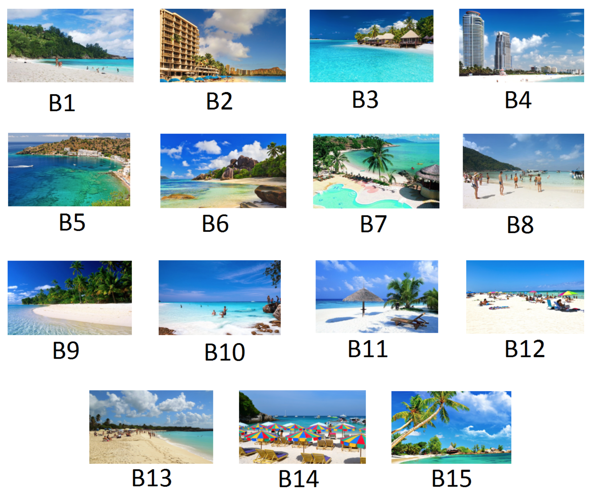

Download
Abstract
Ranking and comparing items is crucial for collecting information about preferences in many areas, from marketing to politics. The Mallows rank model is among the most successful approaches to analyze rank data, but its computational complexity has limited its use to a particular form based on Kendall distance. We develop new computationally tractable methods for Bayesian inference in Mallows models that work with any right-invariant dis- tance. Our method performs inference on the consensus ranking of the items, also when based on partial rankings, such as top-$k$ items or pairwise comparisons. We prove that items that none of the assessors has ranked do not influence the maximum a posteriori con- sensus ranking, and can therefore be ignored. When assessors are many or heterogeneous, we propose a mixture model for clustering them in homogeneous subgroups, with cluster- specific consensus rankings. We develop approximate stochastic algorithms that allow a fully probabilistic analysis, leading to coherent quantifications of uncertainties. We make probabilistic predictions on the class membership of assessors based on their ranking of just some items, and predict missing individual preferences, as needed in recommendation systems. We test our approach using several experimental and benchmark data sets.
Figure 9: The 15 images used for producing the Beach data set

Citation
Vitelli, V., Sørensen, Ø., Crispino, M., Frigessi, A., & Arjas, E. (2017). Probabilistic preference learning with the mallows rank model. The Journal of Machine Learning Research, 18(1), 5796–5844.
@article{vitelliProbabilisticPreferenceLearning2017,
title = {Probabilistic Preference Learning with the Mallows Rank Model},
author = {Vitelli, Valeria and S{\o}rensen, {\O}ystein and Crispino, Marta and Frigessi, Arnoldo and Arjas, Elja},
year = {2017},
month = jan,
journal = {The Journal of Machine Learning Research},
volume = {18},
number = {1},
pages = {5796--5844},
issn = {1532-4435}
}